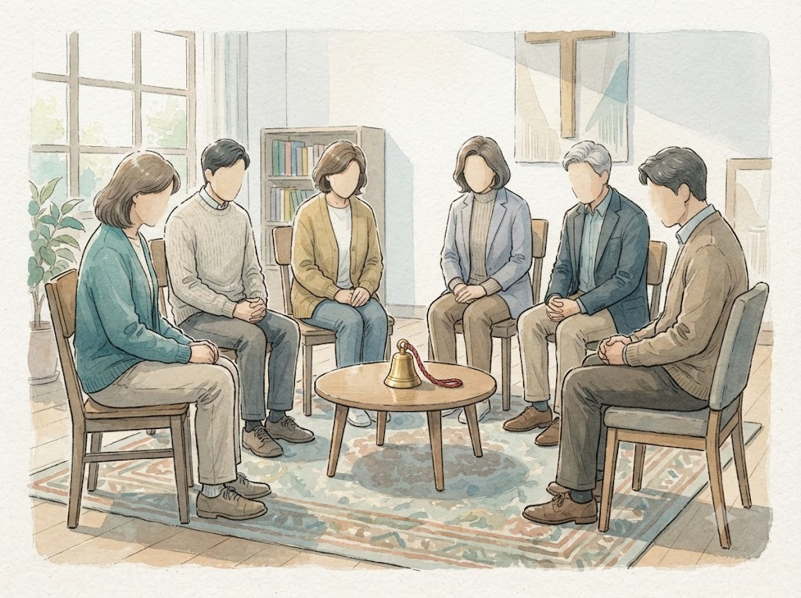
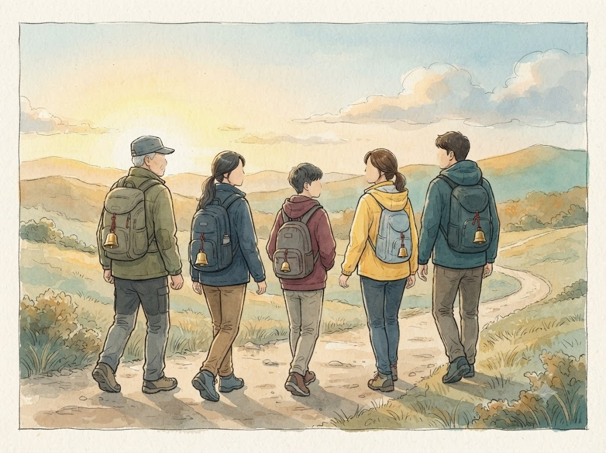
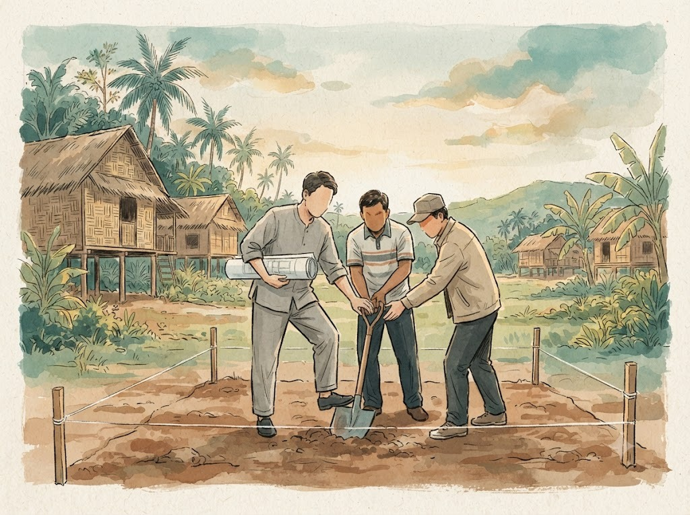

그날의 조별 나눔
대구에는 대구함선네라는 작은 네트워크가 있습니다. 함선네는 「함께하는 선교 네트워크」의 줄임말입니다. 몇 해 전 함선네가 연 선교 강좌를 함께 들은 대구의 장로와 집사들이 후속 모임을 청하면서 생겼고, 지금은 여러 교회의 선교위원들이 서로의 교회를 찾아가고 함께 공부하는 모임이 되었습니다. 저는 이 모임의 코디네이터 가운데 한 사람입니다.
2025년 가을부터 대구함선네는 선교와 재정을 다루는 세미나를 이어 왔습니다. 2026년 봄 그 두 번째 자리에서 선교지 재산권을 다루었습니다. 인터서브와 대구함선네와 한 지역교회가 함께 연 자리였습니다. 제목은 「선교지 재산권, 어떻게 함께 지킬 것인가?」. 여덟 곳 안팎의 교회에서 선교위원과 장로와 집사 열다섯 명이 신청했고, 다른 선교단체의 선교사 두 분도 함께 앉았습니다. 가이드라인과 함께 「보내는 선교에서 함께 지키는 선교로」라는 읽을거리를 미리 보내 드렸고, 가이드라인이 왜 필요한지, 실제로 어떻게 작동하는지, 교회와 단체가 어떻게 함께할 수 있는지를 세 차례 나누어 이야기한 뒤 조별로 둘러앉았습니다.
조별 나눔에서 나온 말들이 지금도 기억에 남습니다. 협력 교회라서, 혹은 사역의 주체가 아니라서 관여할 수 없다고 그냥 두면 그것이 「하나님 앞에서의 배임」이 될 수 있다는 말이 있었습니다. 처음 내보낼 때부터 안전장치를 마련해야 한다는 데 여러 분이 고개를 끄덕였습니다. 한 분은 선교사가 현지인에게 지분의 51퍼센트를 넘겨주었는데, 그 현지인이 선교사 몰래 재산을 팔아 버린 일을 들려주었습니다. 건축 때 한꺼번에 후원을 받아 사역하다가, 은퇴가 다가와서야 재산을 넘기는 이야기를 꺼내면 선교사 쪽에서 거부감이 매우 클 것이라는 걱정은 여러 분의 공통된 고민이었습니다.
이야기는 자연스럽게 처음으로 거슬러 올라갔습니다. 현지 사역자에게 사역비를 보낼 때는 시작부터 5년 안에 자립한다는 식의 분명한 계획을 함께 세우자. 은퇴 다섯 해 전부터는 은퇴 계획서를 쓰고, 돌아온 뒤에도 국내에서 새 사역을 준비할 수 있도록 두 해쯤 유예를 두자. 보내는 것에서 끝나지 말고 보내는 날부터 돌아오는 날까지의 약속을 만들자. 감시하자는 이야기가 아니라 끝까지 돌보자는 이야기로 모여 갔습니다. 그 자리에서 저는 우리가 파트너들과 나누던 이야기를 교회의 언어로 다시 듣고 있었습니다.
방울은 누가 다나

그런데 그날 가장 많이 되풀이된 것은 다른 물음이었습니다. 오늘 나눈 이야기에 다 동의하지만, 정작 이 이야기를 들어야 할 분들이 이 자리에 없는데 다음 걸음을 어떻게 이어 가느냐는 물음입니다. 담임목사님, 선교를 맡은 장로님, 그리고 그 교회가 보낸 선교사님. 여기서 깨달은 것을 교회의 리더십에 어떻게 전할 수 있겠느냐, 선교사 본인이 이 이야기에 마음을 열게 하려면 어디서부터 시작해야 하느냐는 것이었습니다. 교회 안에 이 일을 꾸준히 맡아 줄 사람이 없다는 고민도 함께 나왔습니다. 협의체를 만들어도 그것을 굴러가게 할 코디네이터를 세우기가 어렵다는 것입니다.
그 물음은 그날 그 방에 있던 모두의 물음이었고, 솔직히 말하면 제 물음이기도 했습니다.
제게 그 물음은 「고양이 목에 방울은 누가 다나」로 들렸습니다. 모두가 좋은 생각이라고 하는데, 정작 그 일을 누가 시작하느냐는 물음입니다. 이런 자리에는 늘 실무를 맡은 분들이 옵니다. 저 역시 다른 자리에서는 꼭 들어야 할 이야기를 듣지 못하고 지나가는 사람입니다. 그 물음은 그날 그 방에 있던 모두의 물음이었고, 솔직히 말하면 제 물음이기도 했습니다.
고백할 것도 있습니다. 저는 그 자리에 원칙을 들고 갔습니다. 공적 자산과 여섯 가지 가치와 세 사람이 함께 정하는 구조. 그런데 교회들이 묻고 있던 것은 지금 안고 있는 일을 어떻게 풀어야 하느냐는 것이었습니다. 원칙을 이야기하는 자리가 어느새 오래 쌓인 고민을 털어놓는 자리가 되었던 것은, 제가 준비한 것과 교회가 필요로 한 것 사이에 틈이 있었기 때문입니다. 파트너 곁에서 배우던 것을 같은 무렵 교회에서도 배우고 있었던 셈입니다. 그보다 앞서 한 교회와는 따로 네 시간을 앉아 있기도 했지만, 그 뒤에 제가 곁에 남지 못했습니다. 2편에 쓴 실패를 교회에서도 되풀이한 것입니다. 그리고 인터서브가 실제로 어디까지 함께할 수 있느냐는 물음에는, 아직 시원한 답을 드리지 못했습니다.
방울을 다시 보다

그날 이후 「방울」이라는 말을 오래 붙들고 있었습니다.
우화 속 방울은 고양이를 감시하려고 다는 것입니다. 고양이가 오는 소리를 미리 듣고 피하려는 장치입니다. 재산을 함께 정하자는 이야기를 그렇게 들으면 그것은 누군가의 목에 다는 감시 장치가 되고, 그러니 아무도 나서서 달려고 하지 않습니다. 달리는 쪽도 반가울 리 없습니다.
방울은 누군가의 목에 몰래 다는 것이 아니라, 처음 길을 나설 때 함께 다는 것입니다.
그런데 우리가 말하려던 방울 이야기에는 고양이가 없습니다. 조심해야 할 누군가의 목에 다는 방울이 아니기 때문입니다. 이 방울은 함께 길을 나서는 사람들이 저마다 하나씩 다는 것이고, 짐을 나누어 지고 걷는 서로가 어디쯤 있는지 알려 주는 소리입니다. 방울은 누군가의 목에 몰래 다는 것이 아니라, 처음 길을 나설 때 함께 다는 것입니다. 은퇴를 앞두고 꺼내면 의심으로 들리는 이야기도, 처음 떠나는 날 함께 정하면 서로에 대한 약속이 됩니다.
인터서브 재산권위원회는 2026년 초 이 일을 왜 하는지 다시 적으면서 이렇게 썼습니다. 선교사를 잠재적인 범죄자로 보는 시선에서 벗어나, 존경받고 보호받는 리더로 세우는 일. 그리고 재정은 행정이 아니라 영적인 보호라는 것. 감시의 방울이 아니라 동반의 방울이라는 뜻입니다.
반가운 이야기도 있었습니다. 세미나와 만남을 이어 가는 동안, 세워진 지 다섯 해가 되지 않아 한창 틀을 세우고 있는 교회에서는 가이드라인이 실제로 도움이 되었다는 이야기를 들었습니다. 제가 준비한 원칙은 이미 많은 일을 안고 있는 교회들에게 그 일에 닿는 말로 옮겨지지 못했지만, 이제 막 틀을 세우는 교회에게는 같은 원칙이 길잡이가 되었습니다. 방울은 처음에 달아야 한다는 사실을, 그 교회가 먼저 보여 주었습니다.
연재를 닫으며

세 편에 걸쳐 인터서브 재산권위원회의 몇 해를 돌아보았습니다. 사고가 나기 전에 파트너들에게 먼저 들었고, 울타리를 들고 파트너 곁에 앉아서는 감시가 아니라 동반이어야 한다는 것을 배웠고, 교회 곁에서는 방울을 처음에 함께 달아야 한다는 사실을 배웠습니다. 우리는 여전히 배우는 중이고, 답하지 못한 물음도 많습니다.
한국 교회는 지난 수십 년 동안 참 많이 보냈습니다. 이제는 보낸 것을 함께 지키는 법을 배울 때입니다. 보내는 선교에서 함께 지키는 선교로. 그것은 선교사를 덜 믿겠다는 뜻이 아니라, 선교사가 평생 일군 것이 그분의 손을 떠난 뒤에도 하나님 나라를 위해 계속 쓰이도록 함께 붙들겠다는 뜻입니다.
이양은 떠나기 전날 도장을 찍는 일이 아니라, 첫 삽을 뜰 때부터 함께 그리는 일입니다.
시작은 거창하지 않아도 됩니다. 선교사와 파송교회와 선교단체, 단체에 속하지 않은 선교사라면 선교단체 대신 현지의 동역자, 이렇게 세 사람이 대화방 하나를 열고 한 해에 두 번 형편을 나누는 것으로 충분히 시작할 수 있습니다. 이양은 떠나기 전날 도장을 찍는 일이 아니라, 첫 삽을 뜰 때부터 함께 그리는 일입니다. 이미 지은 것이 있어도, 이제 막 짓기 시작했어도 늦지 않습니다. 다만 일이 생긴 뒤가 아니라 일이 생기기 전에, 함께 방울을 달자고 먼저 손을 내밀어 주시기를 바랍니다. 우리가 할 수 있는 만큼, 그 자리에 함께 앉겠습니다.